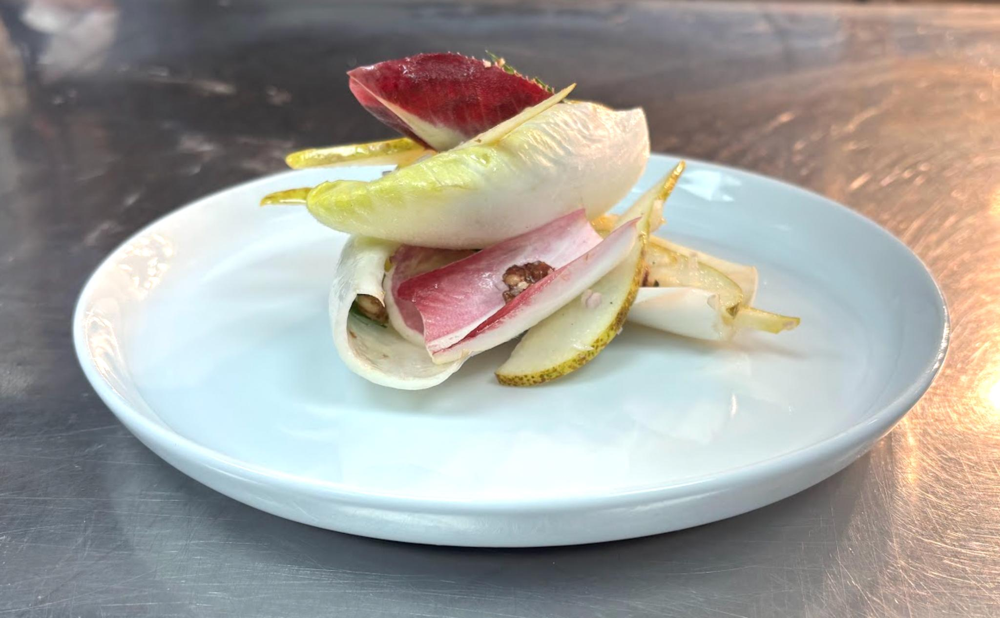

Plate
Large starter plate
Ingredients
- 6–7 thin slices of pear
- Red chicory (approx. 4 leaves)
- White chicory (approx. 4 leaves)
- Candied walnuts
- Parsley
- Finely diced shallots
- Coarse salt
- House dressing
- Blue cheese dressing
Order of assembly
- Add pear, chicory, walnuts, parsley, shallots, salt, and house dressing to a bowl
- Mix lightly to coat evenly
- Use larger white chicory leaves as cups/base
- Build upwards with smaller components inside and around
- Create height and angles (not flat)
Finish on the pass
Dress with blue cheese dressing.